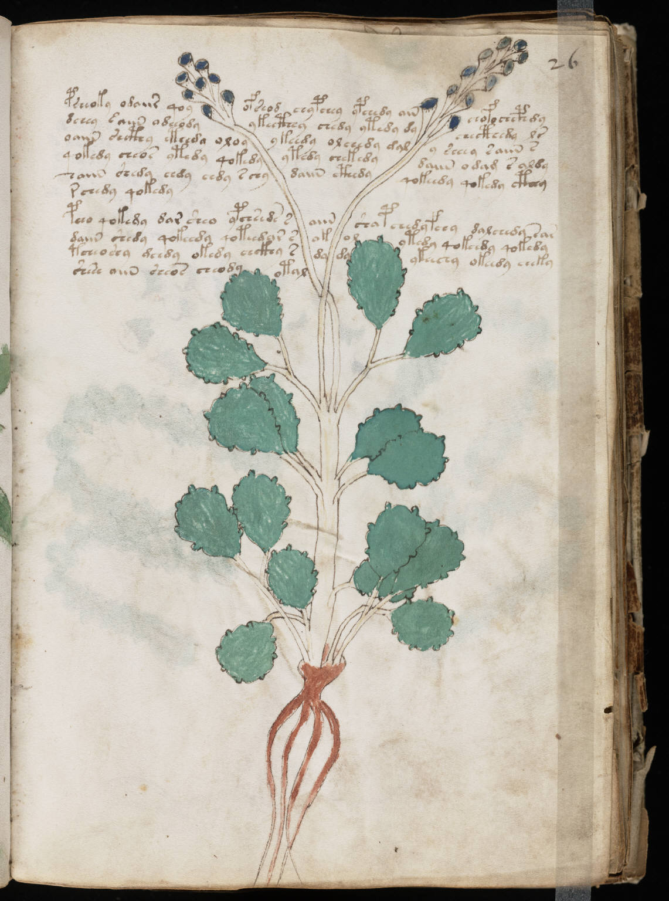

f26r
1psheoky odaiir qoyofseod chypchey ypchedy ainchofochcphdy2dchey *aiin adeeodyykecthhy chedy ytedy dychecthedy lr3oaiin shcthy eteeda oloyykeedy olchedy galy sheey saiin s4qokedy cheos ytedy qokedyytedy chekedydaiin odam s aldy5haiin shedy eedy eedy schydaiin cthedyqokeedy qokedy cthhy6rchedy qokedy7pcho qokedy dar sheo ypchseds saiinshapchedyfeey dalchedy sas8daiin shedy qokeedy qoteedar sokolotedy qokchdy qokedy9tcheo shy geedy okedy chckhy sdydyykeechy okeedy cheky10shese aiin sheos cheody otal
